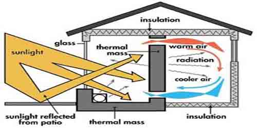

Environmental aspects of building material

Note: All links open in a new window, close pages that are not needed anymore to unclutter the taskbar (task switcher area shows buttons for running programs, allowing you to switch quickly between windows) .